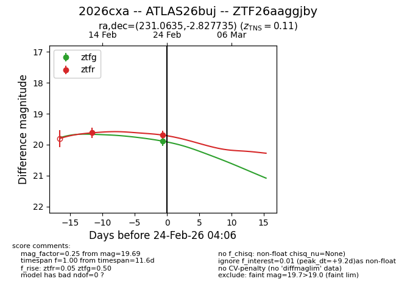
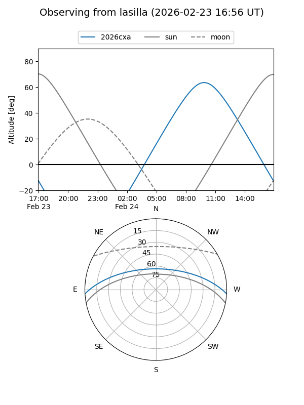
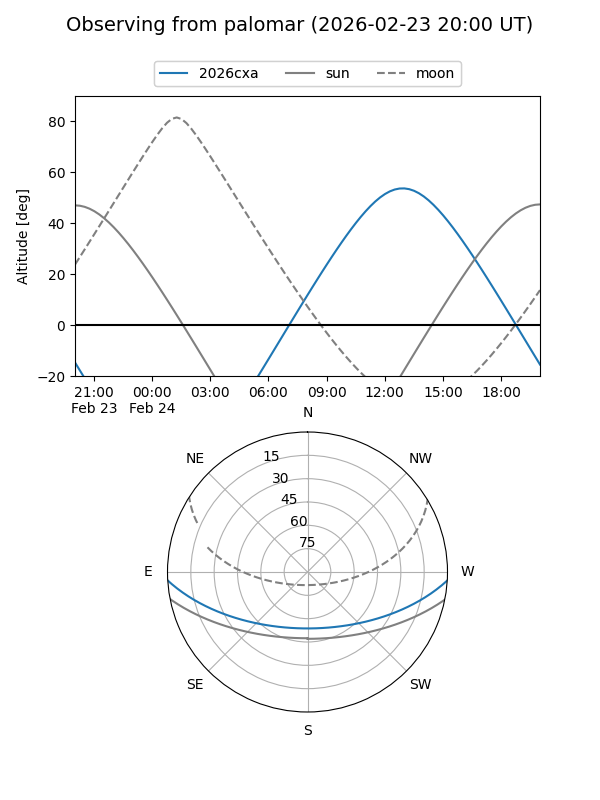

2026cxa
Target 2026cxa at 2026-02-24 09:08
Aliases and brokers:
FINK: link
Lasair: link
ALeRCE: link
TNS: link
YSE: link
alt names
ZTF26aaggjby (ztf,fink_ztf)
2026cxa (tns,yse)
ATLAS26buj (atlas)
Coordinates:
equatorial (ra, dec) = 231.0635,-2.82773
equatorial (HMS+DMS) = 15:24:15.24,-02:49:39.85
galactic (l, b) = (359.8901,+42.53324)
Flags:
Photometry:
last ztfg=19.88, ztfr=19.69
1 ztfg, 2 ztfr detections
Lightcurve

Visibility


Additional plots